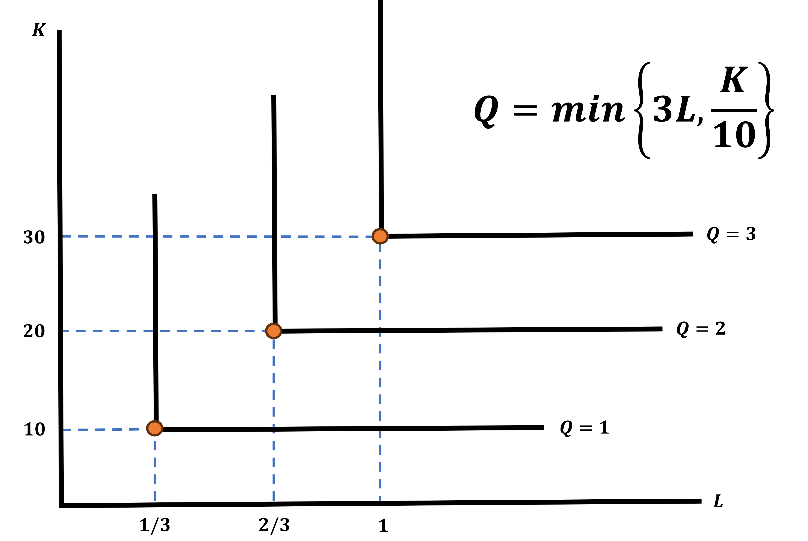

How Do Firms Optimize?
Instead of maximizing utility, as consumers do, firms will
MINIMIZE THEIR COSTS OF PRODUCTION
. . .
These decisions are also done under a constraint, but what constraints do firms face?
Let’s tell a story to see the logic before we jump into the math
Firm Optimization Story Time
Imagine you are the manager of a clothing factory that produces Ducks football jerseys
It is almost Fall and Mr. Nike himself calls you. They tell you “We need 20,000 jerseys made for the start of the season”
. . .
Your goal is to choose how many workers \((L)\) and how much capital \((L)\) to use to produce the 20,000 jerseys as cheaply as possible
How do you figure out how to use \(L\) and \(K\) to make 20,000 jerseys?
With a Production Function
Production Functions
These are a function of how a firm can transform inputs into outputs
It will work just like a utility function
- In our the jersey example, we have:
\[\begin{align*} F(L,K) &= Q \\ F(L,K) &= 20,000 \end{align*}\]
Putting it Together
The problem the factory manager solves can be written as
\[ \min \;\; w \cdot L + r \cdot K \;\;\; s.t. \;\;\; F(L,K) = Q = 20,000 \]
. . .
We can read this as:
- The firm minimizes their costs (\(w \cdot L + r \cdot K\)) such that you produce a given quantity \((Q)\) using labor \((L)\) and capital \((K)\) with Production Technology \(F(L,K)\)
Let’s Give Things Some Values
Now let’s say we have the following values:
- Wages are \(w = 10\)
- Rental rates are \(r = 5\)
- The factory’s Production Function is \(F(L,K) = 5L + 2K\)
. . .
The problem becomes:
\[ \min \;\; 10L + 5K \;\;\; s.t. \;\;\; F(L,K) = 5L + 2K = 20,000 \]
Solving Cost Minimization Problems - New Terms
The methods to solve these problems are practically the same as we saw in Consumer Theory
However, we need to re-label some things:
- The Marginal Rate of Substitution will not be named Marginal Rate of Technological Substitution (MRTS)
- This has a similar interpretation as before:
- What is the firm’s willingness to trade Labor for Capital
- This has a similar interpretation as before:
- Now, instead of using the ratio of marginal utilities, we will use the ratio of marginal productivities
. . .
\[ \text{MRTS} = \frac{MP_{L}}{MP_{K}} = \frac{\frac{\partial F}{\partial L}}{\frac{\partial F}{\partial K}} = \frac{\text{Marginal Productivity of Labor}}{\text{Marginal Productivity of Capital}} \]
Let’s Solve the Jersey Problem
\[ \min \;\; 10L + 5K \;\;\; s.t. \;\;\; F(L,K) = 5L + 2K = 20,000 \]
The solution should look very familiar. We are trying to choose \(L^{*}\) and \(K^{*}\) that optimizes our productivity.
. . .
What type of production function is this?
Perfect Substitutes
. . .
Find MRTS and Set Equal to Price Ratio
\[\begin{align*} \text{MRTS} \;\; &? \;\; \text{Price Ratio} \\ \frac{MP_{L}}{MP_{K}} \;\; &? \;\; \frac{w}{r} \\ \frac{5}{2} \;\; &? \;\; \frac{10}{5} \\ \end{align*}\]
Interpret the MRTS and Price Ratio Relationship
\[ \text{MRTS} > \text{Price Ratio} \]
Use only Labor \(\; \rightarrow \; K^{*} = 0\)
. . .
Plug into Production Function
\[ K^{*} = 0 \; \Rightarrow \; F(L,K) = 20,000 \; \rightarrow \; 5L + 2(0) = 20,000 \; \rightarrow \; L^{*} = \frac{20,000}{5} = 4,000 \]
Jersey Problem 2
\[ \min \;\; 10L + 5K \;\;\; s.t. \;\;\; F(L,K) = 5L + 2K = 20,000 \]
What if \(\; w = 20 \;\) and \(\; r = 5 \;\)?
. . .
Find MRTS and Set Equal to Price Ratio
\[\begin{align*} \text{MRTS} \;\; &? \;\; \text{Price Ratio} \\ \frac{MP_{L}}{MP_{K}} \;\; &? \;\; \frac{w}{r} \\ \frac{5}{2} \;\; &? \;\; \frac{20}{5} \\ \end{align*}\]
Interpret the MRTS and Price Ratio Relationship
\[ \text{MRTS} < \text{Price Ratio} \]
Use only Capital \(\; \rightarrow \; L^{*} = 0\)
. . .
Plug into Production Function
\[ K^{*} = 0 \; \Rightarrow \; F(L,K) = 20,000 \; \rightarrow \; 5(0) + 2K = 20,000 \; \rightarrow \; K^{*} = \frac{20,000}{2} = 10,000 \]
Production Function Forms
We have the exact same functional forms that we used for utility functions
- Cobb-Douglas
- Quasi-Linear
- Perfect Substitutes
- Perfect Complements
. . .
This is good news! It means that mathematically nothing should be suprising
We are just relabeling variables and using the same processes we already know
Production Function Example
Identify and find the MRTS for the following Production Function
\[ F(L,K) = L^{1/3}K^{2/3} \]
. . .
\[ \text{MRTS} = \frac{MP_{L}}{MP_{K}} = \frac{1/3 \cdot L^{-2/3}K^{2/3}}{2/3 \cdot L^{1/3}K^{-1/3}} = \frac{1/3}{2/3} \cdot \frac{K^{2/3}K^{1/3}}{L^{1/3}L^{2/3}} = \frac{1}{2} \cdot \frac{K}{L} \]
Solving Cost Minimization Problems
We will deal with each functional form the same way as we did before.
Cobb-Douglas
Set MRTS equal to Price Ratio
This tells us the relationship that must hold between \(L\) and \(K\) (Optimality Conditions)
Plug Optimality into Production Function constraint
Quasi-linear
Set MRTS equal to Price Ratio
This tells you exactly how much of the input that is inside the \(ln()\) function to use
Plug Optimality into Production Function constraint
Perfect Complements
- Enforce the No-Waste Condition
Perfect Substitutes
Compare the MRTS to the Price Ratio
- If MRTS is larger, use only labor \((L)\)
- If MRTS is smaller, use only capital \((K)\)
Cost Minimization Example
\[ \min \;\; 10L + 5K \;\;\; s.t. \;\;\; F(L,K) = L \cdot K = 20,000 \]
Find the Optimal Values of Labor and Capital
. . .
Find MRTS and set it equal to Price Ratio
\[\begin{align*} \text{MRTS} &= \frac{w}{r} \\ \frac{K}{L} &= \frac{10}{5} = 2 \\ K^{*} &= 2L \end{align*}\]
Plug Optimality Condition into Production Function constraint
\[\begin{align*} L \cdot \color{red}{K^{*}} &= 20,000 \\ L \cdot \color{red}{2L} &= 20,000 \\ 2L^{2} &= 20,000 \\ L^{2} &= 10,000 \\ L^{*} &= \sqrt{10,000} \\ L^{*} &= 100 \\ \\ \end{align*}\]
. . .
Find Optimal Capital
\[K^{*} = 2 \cdot \color{red}{L^{*}} = 2 \cdot \color{red}{100} = 200\]
Perfect Substitutes Example
Let the firm’s production function be \(F(L,K) = L + 2K\). What are the cost minimizing \(L\) and \(K\) to produce 100 goods, when they face \(w = 10\) and \(r = 10\)
. . .
Find MRTS and Compare to Price Ratio
\[\begin{align*} \text{MRTS} &= \frac{w}{r} \\ \frac{MP_{L}}{MP_{K}} &= \frac{10}{10} \\ \frac{1}{2} &\lesseqgtr 1 \end{align*}\]
Determine which is greater
\[\begin{align*} \frac{1}{2} < 1 \end{align*}\]
Use only Capital \(\rightarrow L^{*} = 0\)
Plug into Production Function to Determine \(\; K^{*}\)
\[\begin{align*} F(L,K) &= Q \\ L^{*} + 2K^{*} &= 100 \\ 0 + 2K^{*} &= 100 \\ K^{*} &= 50 \end{align*}\]
What’s Actually Different Then?
Although the problem we are solving is essentially the same, the levers we are pulling are not
Let’s introduce some new (but familiar) concepts:
Production Functions have Isoquants instead of Indifference Curves
Isoquants are all the possible combinations of labor and capital that produce a certain level of output
Fortunately, they have the same shape as their Indifference Curves but instead of a level of Utility, they represent a level of quantity produced
Isoquants
Imagine that it takes exactly 20 minutes of labor (1/3 of an hour) AND 10 units of capital to make one Ducks Jersey
. . .
What form does this Production Function take?
. . .
Perfect Complements

What’s Actually Different? The Process
The key difference is a conceptual one:
For consumers, we would maximize the Utility Function, where the costs acted as our constraint
For producers, we minimize the cost function and the production function is the constraint
- Additionally, we will call this cost function an Isocost line
. . .
We are looking for the lowest possible Isocost line that touches the production contraint exactly once
Switch to iPad to show draw
Understanding the Differences Visually
What is the Same?
Some things have not changed
- The slope of the isoquant is the negative MRTS (-MRTS)
- The MRTS tells us the firm’s willingness to trade away capital to get another unit of labor
- We still have a price ratio: \(\frac{w}{r}\)